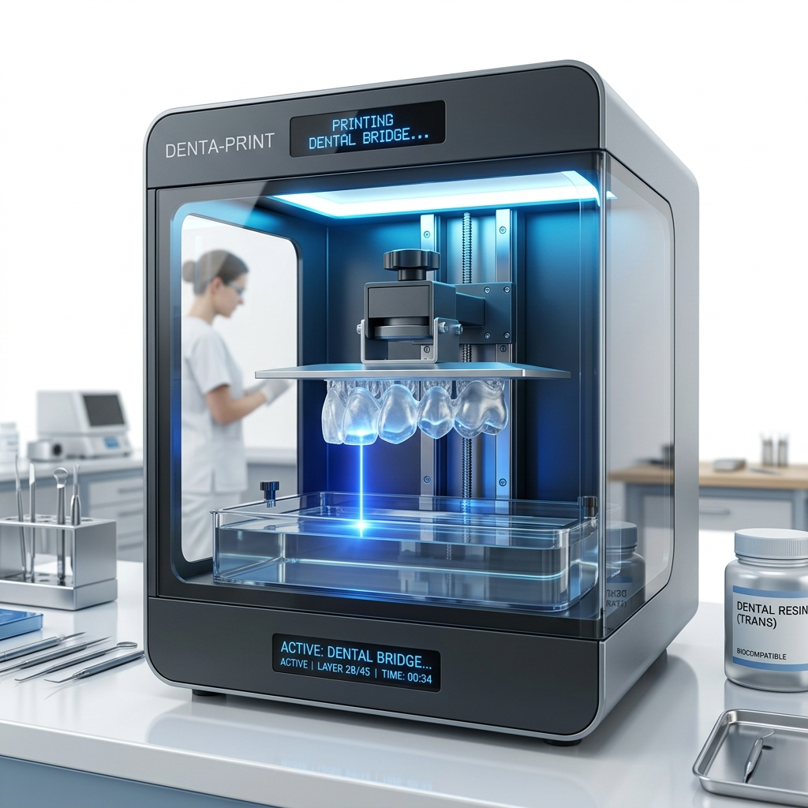

Dentistry Today • May 16, 2026
The dental industry is undergoing a digital transformation, and at the heart of this change is 3D printing technology. Recent advancements in "chairside" 3D printers, such as the cara Print Cube, are allowing dental practices to produce high-quality models, surgical guides, and even temporary crowns with unprecedented accuracy and speed.
For patients, this technology translates to a much more comfortable and efficient experience. Researchers and clinicians are finding that 3D-printed dental appliances offer several key advantages:
At Dentplant, we continuously monitor these technological breakthroughs to ensure our clinical workflow remains at the absolute cutting edge. While the industry moves toward fully digital workflows, our commitment is to integrate these evidence-based advancements as they become the new standard of care.
Understanding the potential of 3D printing allows us to offer more precise consultations and prepare for the future of personalized dental care, where every restoration is as unique as the patient’s smile.
Dentistry Today • May 16, 2026
Ο οδοντιατρικός κλάδος βιώνει έναν ψηφιακό μετασχηματισμό, και στην καρδιά αυτής της αλλαγής βρίσκεται η τεχνολογία της 3D εκτύπωσης. Οι πρόσφατες εξελίξεις στους τρισδιάστατους εκτυπωτές επιτρέπουν στα οδοντιατρεία να παράγουν μοντέλα υψηλής ποιότητας, χειρουργικούς οδηγούς και προσωρινές στεφάνες με πρωτοφανή ακρίβεια και ταχύτητα.
Για τους ασθενείς, αυτή η τεχνολογία μεταφράζεται σε μια πολύ πιο άνετη και αποτελεσματική εμπειρία. Οι ερευνητές διαπιστώνουν ότι οι 3D εκτυπωμένες οδοντιατρικές εφαρμογές προσφέρουν σημαντικά πλεονεκτήματα:
Στη Dentplant, παρακολουθούμε συνεχώς αυτές τις τεχνολογικές ανακαλύψεις για να διασφαλίσουμε ότι η κλινική μας ροή εργασίας παραμένει στην απόλυτη αιχμή. Καθώς ο κλάδος κινείται προς πλήρως ψηφιακές ροές εργασίας, η δέσμευσή μας είναι να ενσωματώνουμε αυτές τις τεκμηριωμένες προόδους καθώς γίνονται το νέο πρότυπο φροντίδας.
Η κατανόηση των δυνατοτήτων της 3D εκτύπωσης μας επιτρέπει να προσφέρουμε πιο ακριβείς συμβουλές και να προετοιμαζόμαστε για το μέλλον της εξατομικευμένης οδοντιατρικής φροντίδας.